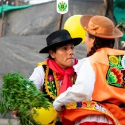
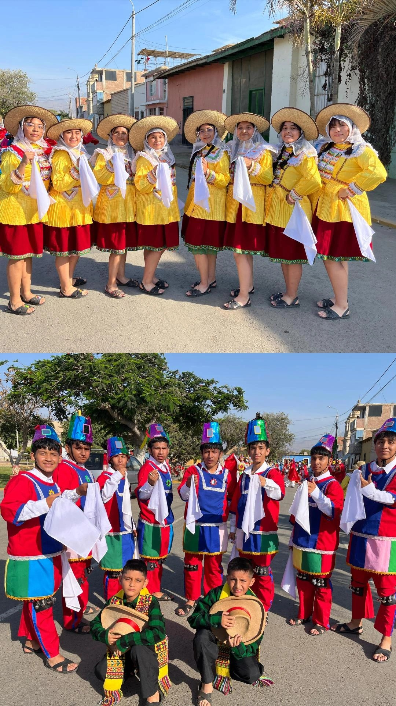
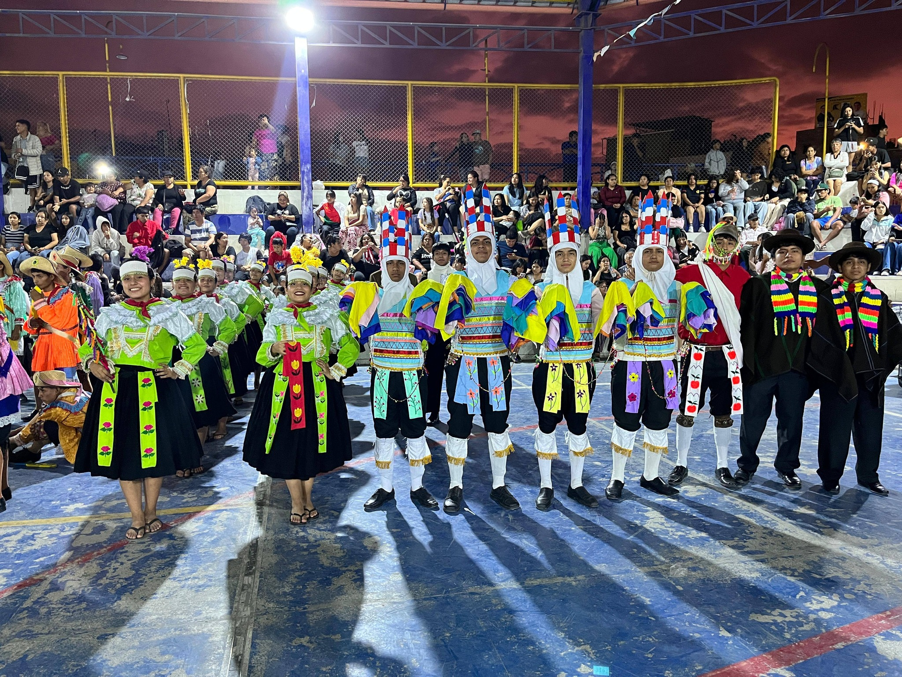
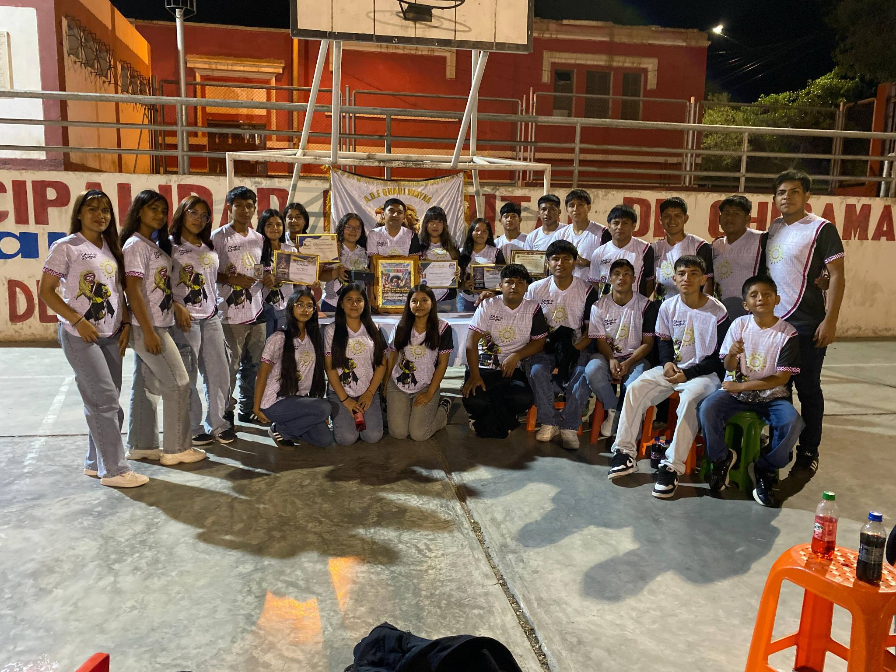
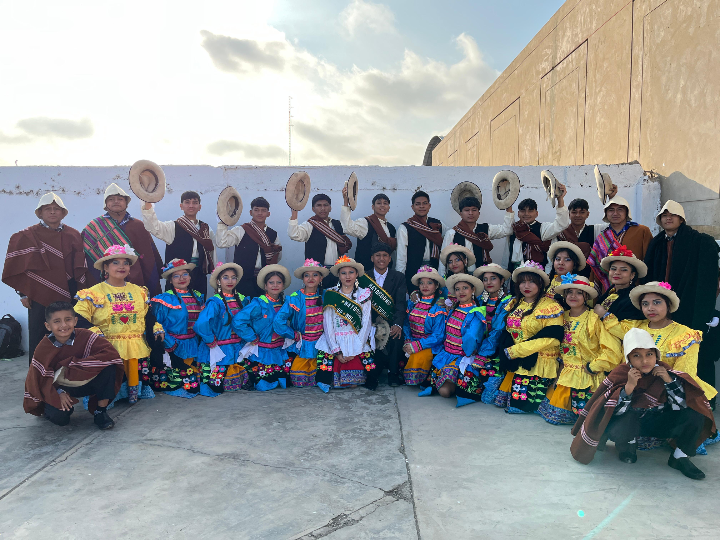

01
Historia
Ubicación
Descripción
Descubre cada rincón del Valle Chicama
5 agrupaciones activas que mantienen viva la identidad del pueblo


Las Huanquillas de Chiclín son una de las danzas más representativas y antiguas del distrito de Chiclín, ubicado en el valle Chicama, región La Libertad – Perú. Esta danza tradicional refleja la identidad cultural del pueblo y se presenta principalmente durante fiestas patronales, celebraciones religiosas y actividades culturales.
Danza tradicional representa la fuerza, la fe y la identidad cultural del pueblo chiclinero. Sus coloridos trajes y movimientos vigorosos mantienen viva una de las expresiones folclóricas más importantes de la región.


Danza de máscaras y colorido espectacular que representa la lucha eterna entre el bien y el mal. Sus trajes elaborados y coreografía dinámica la convierten en una de las más vistosas del Valle.



Los Ancashinos de Chiclín es una danza folclórica tradicional que destaca por sus movimientos enérgicos, música festiva y gran valor cultural dentro del Valle Chicama.
Sus danzantes representan la alegría, unión y costumbres del pueblo chiclinero mediante coloridos vestuarios y expresiones artísticas que mantienen viva la tradición regional.


Agrupación fundada en Chiclín con raíces en la tradición trujillana. Representa la conexión entre el puerto de Salaverry y el Valle Chicama a través del folklore y la danza.




Organizada por la Hermandad del Señor de la Caña — celebración el 28 de junio

Señor de la Caña — Chiclín
La leyenda cuenta que unos trabajadores iban a quemar un cañaveral, pero una parte no ardía. Al inspeccionar descubrieron la sagrada imagen del Señor de la Caña.
Más de 30 agrupaciones de danzas folklóricas, bandas de música e instituciones educativas
Recorrido de la sagrada imagen por las principales calles de Chiclín
Celebrada en la Plaza Mayor congregando a autoridades regionales y cientos de fieles
El momento de mayor algarabía — fuegos artificiales iluminan la noche de Chiclín
Orquestas, ferias de gastronomía norteña y bailes en la Plaza Mayor
Tradición deportiva del pueblo — fundado en 1917

El Club Sport Alfonso Ugarte de Chiclín fue el primer campeón de la Copa Perú, siendo considerado el segundo equipo de mayor tradición y arraigo popular en la ciudad de Trujillo. Su clásico histórico es contra el Carlos A. Mannucci en el famoso Clásico Trujillano. Actualmente sigue activo en la Liga Distrital de Trujillo.